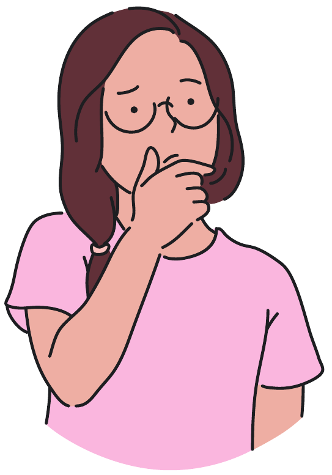

E drejta e secilit garanton të drejtën e të gjithëve
Të drejtat tona

Të drejtat e njeriut janë themeli i lirisë, i paqes dhe i drejtësisë, pasi të gjithë njerëzit lindin të lirë e të barabartë në të drejta. Njerëzit kanë luftuar për mbrojtjen dhe respektimin e të drejtave të tyre, duke e përmirësuar edhe jetën në shoqërinë e tyre.
Njerëzve në botë u ka ndodhur shumë herë që t’u shkelen dhe të mos u respektohen të drejtat e tyre. Kështu, ata çdoherë kanë luftuar për to, duke e përmirësuar edhe jetën në shoqërinë demokratike. Njerëzit janë të barabartë, pa marrë parasysh racën, gjininë, moshën, kulturën apo çfarëdo faktori tjetër. Në rast të shkeljes së të drejtave, njerëzit çdoherë duhet të kërkojnë ndihmë nga institucionet e duhura, si shkolla, policia etj. dhe asnjëherë nuk duhet të heshtin e të pajtohen me atë situatë, pasi të drejtat e tyre mbrohen me ligj.